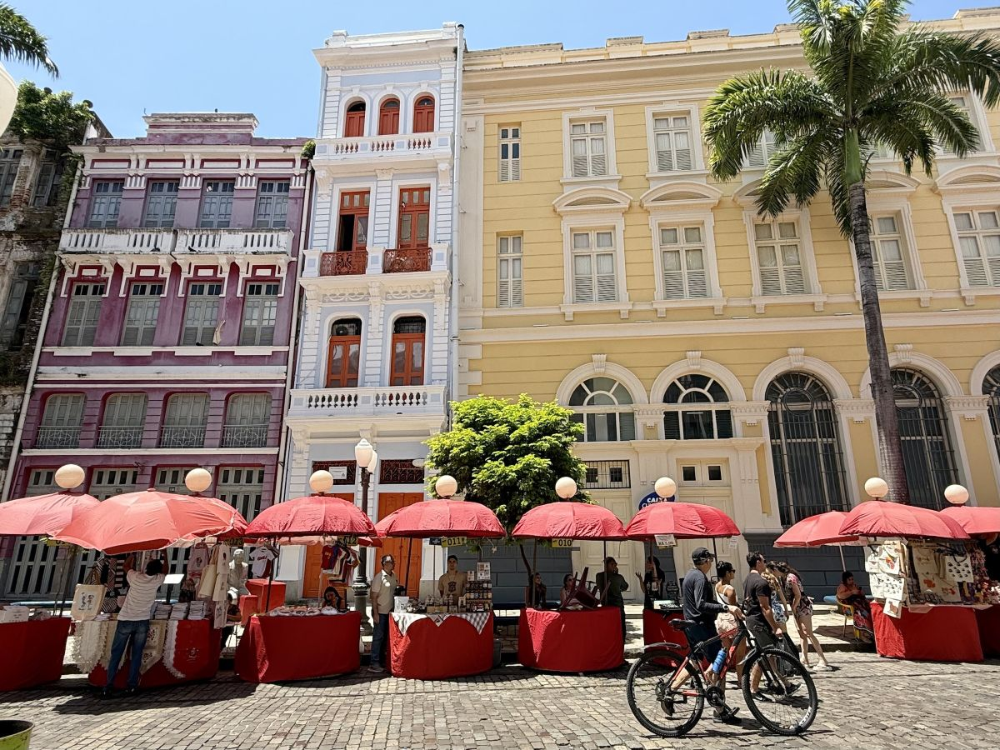

1. Rua do Bom Jesus
Eleita uma das ruas mais bonitas do mundo, destaca-se pelos casarões coloridos, arquitetura colonial e piso de paralelepípedos.
- Abriga a primeira sinagoga das Américas (Kahal Zur Israel).
- Feirinha de artesanato local aos domingos.
- Estátua de tamanho real de Alceu Valença.
📍 Acesso Livre
🎟️ Gratuito